Measured on the machine. Explained in words anyone can read.
You train for months and still can’t say what’s working.
Watches measure your heart, not the machine. Apps make you type every set. So most training is never measured.
Readout puts a small sensor on each machine. It records every rep, set and rest on its own.
After each workout you get one score and one next step, in words anyone can read.
Working name: readout.com and the main domains are taken. Screened instead: Stackread, Stackbeat, Liftscale.
Brand kit
Everything someone needs to make a thing that looks and sounds like Readout.
Name and mark
readout
The wordmark in Geist, lowercase, with the scale under it: eleven ticks like an instrument, one of them blue. The blue tick is the reading. Working name; it needs the trademark, domain and app store check before anything is printed.
Colours
Chalk #F5F5F2 Pages and posts
White #FFFFFF Cards, the app
Graphite #17181A Text, night posts
Steel #62666D Second line, labels
Plate blue #2747D6 The brand and the buttons. From the 20 kg plate.
Score blue gradient The workout score arc.
Progress amber gradient The progress arc and its chart.
Rest teal gradient The rest countdown.
Status green, yellow-green, amber Good, optimal, long. Always with the word.
Type
Geist. Everything you read.
3:24, 78, 12 at 45 kg
GEIST MONO: LABELS, UNITS, SOURCES
Big numbers stay in Geist with their normal figures; columns of numbers line up with tabular figures.
Charts
Each measure keeps its own colour: blue for the score, amber for progress, warm-to-cool for live sets. Thin bars, rounded at the top and square at the base. Lines 2 px. Numbers in ink, never in the series colour. Until the lab has real numbers, every chart says “sample”.
Voice
Numbers first, then one sentence about what they mean.
Plain words. “Total weight lifted”, not “volume load”.
Calm. No exclamation marks, no hype, no shame.
On your side. Every finding ends with what to do.
Honest about limits. Samples are marked; misses are published.
Say
Leg press: up 8% in four weeks. Keep the weight, add one rep.
Your rests ran 1:24 long. On heavy days that’s fine.
Score 78. Steady progress, rests a bit long.
Never
Crushing it!!! New PR unlocked 💪
You rested too long. Focus.
Optimise your hypertrophy stimulus.
The wave
Our hero, in place of a sphere or a photo: the weight stack moving, as the sensor sees it. One hump per rep, a little lower as the set gets hard. It is true data, so it can only ever show a real set (or a marked sample). Drawn as one bright strand with two faint ones beside it and a soft glow, in the measure’s gradient.
The scale
Our gauge, in place of arcs and rainbow bars: the tick ruler from the logo, lit up to the reading in the measure’s gradient, the reading tick taller with a ringed dot, mono labels under it. Used for the score, the week, the reps in a set and the rest countdown.
The app
Built on Ultrahuman’s light craft (white cards on soft grey, deep gradients, mono labels, big plain numbers) and made ours with the wave, the scale, the lowercase wordmark and one black button per screen. Each measure keeps its colour: score blue, progress amber, rest teal.
Version 2, in the app’s look (wave, scale, white cards). The engine is First set: one person, one workout with the sensor, filmed; every episode becomes a reel and a five-slide carousel. Statics come from the lab’s numbers and the photo shoot.
First set, episode 1 carousel
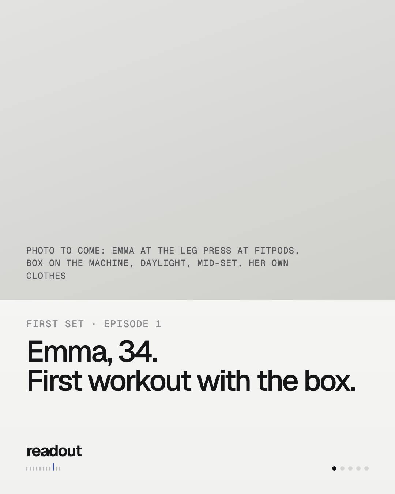
e1 Episode coverEmma at the leg press (photo from the shoot).
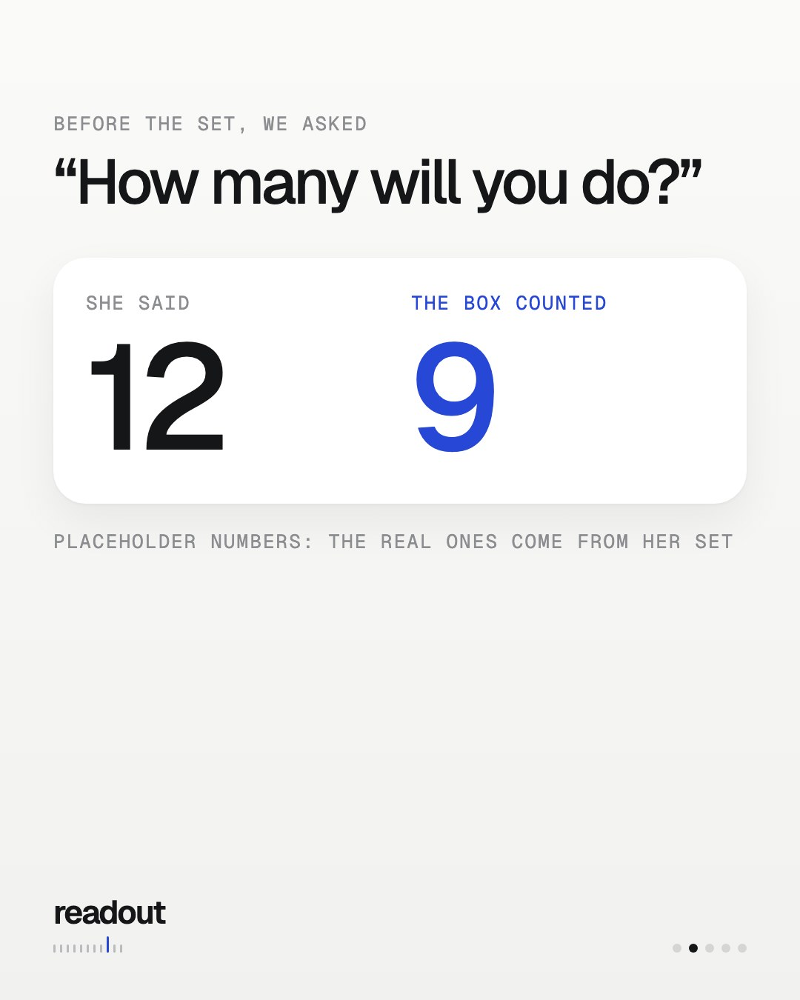
e2 She said vs the sensorHer guess against the count; real numbers from her set.
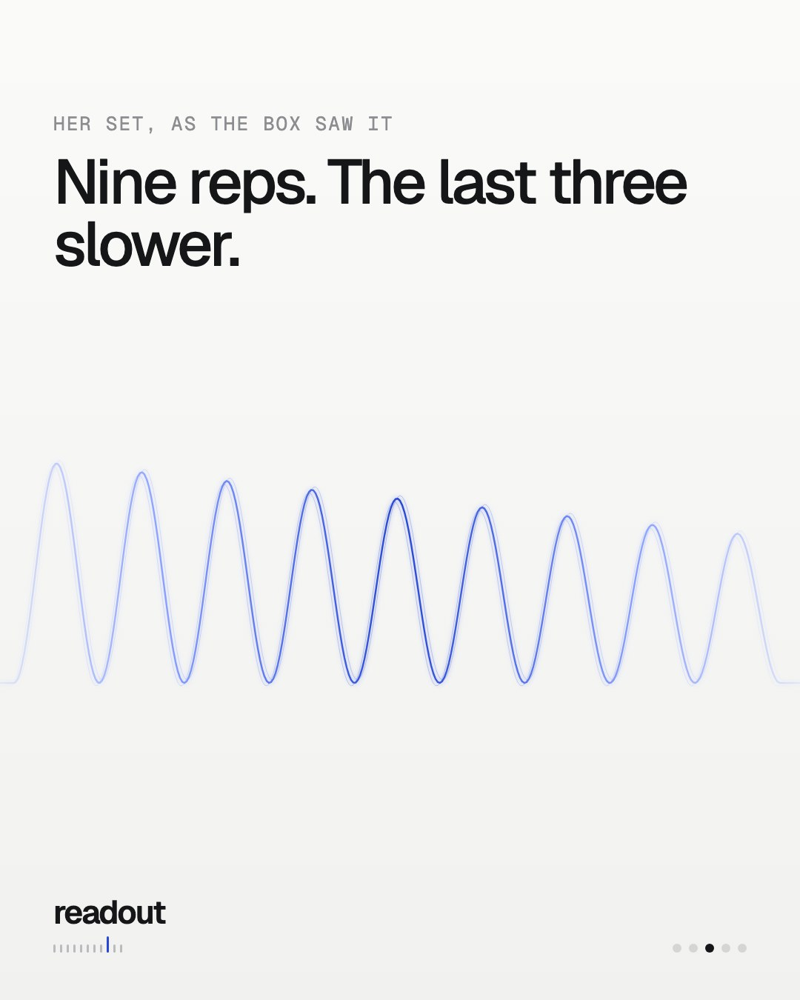
e3 Her set as a waveThe weight stack moving, nine reps.
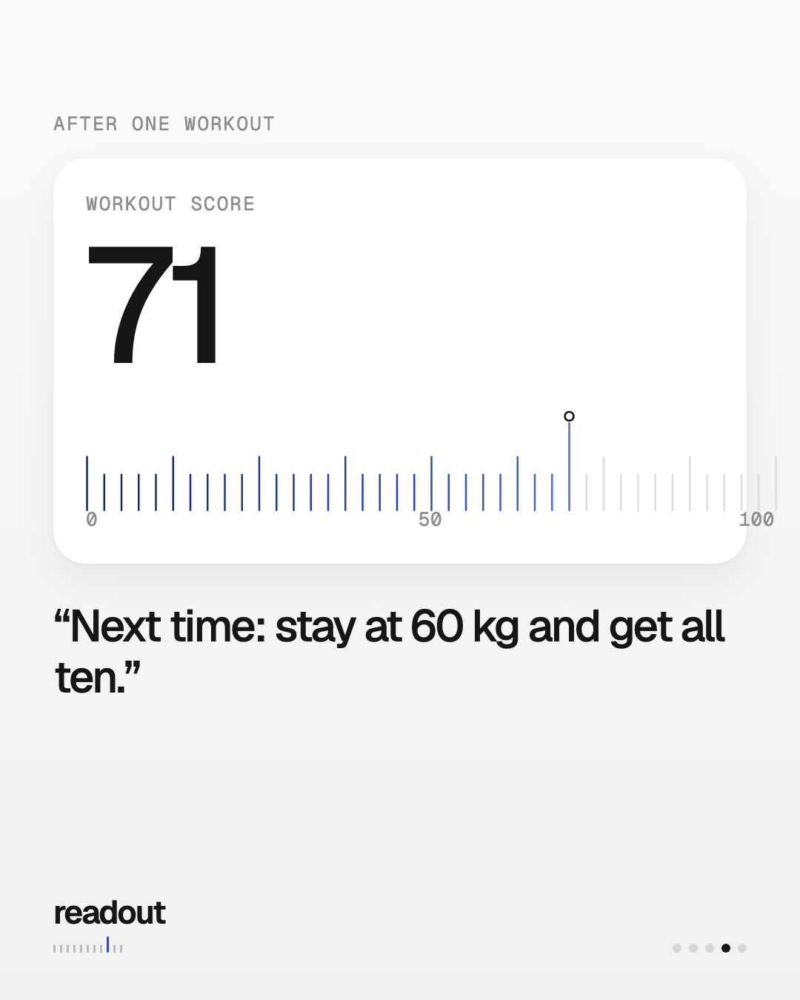
e4 Her scoreOne number and the next step.
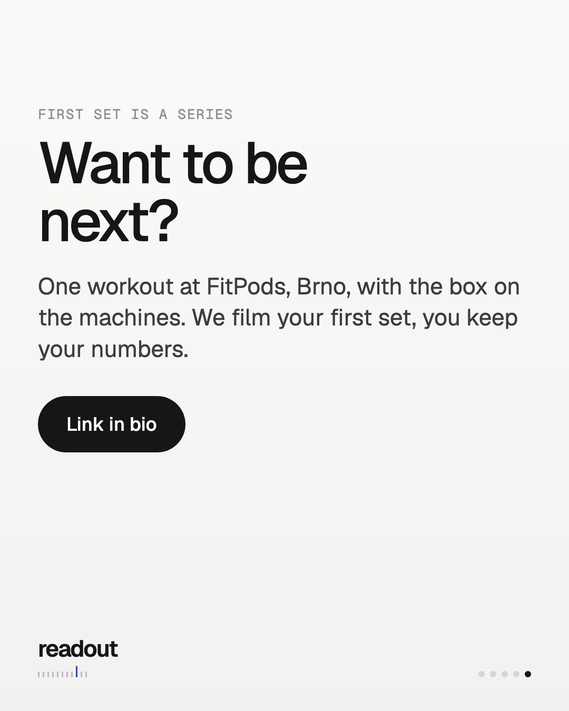
e5 Want to be next?The call to join an episode.
Statics
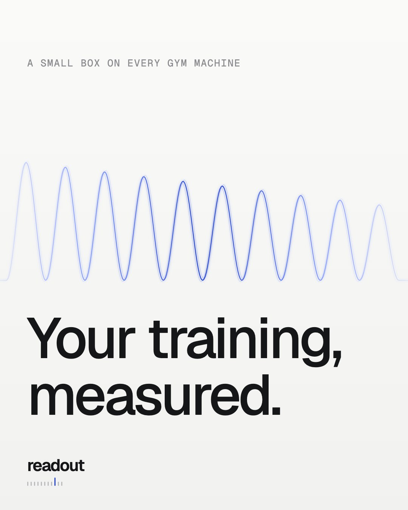
s1 Your training, measured.Brand static with the wave.
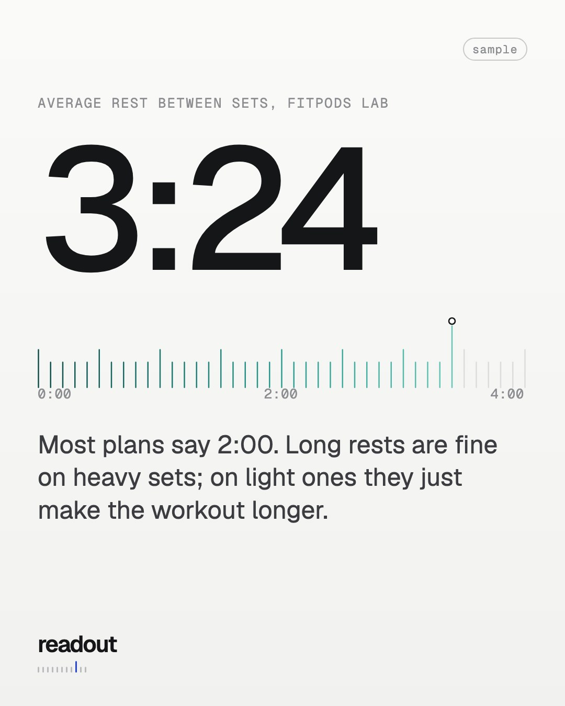
s2 3:24One number from the lab (sample until real).
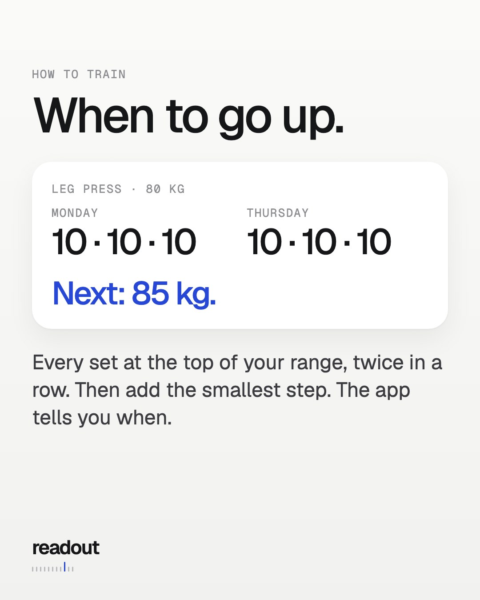
s3 When to go upThe rule the app uses.
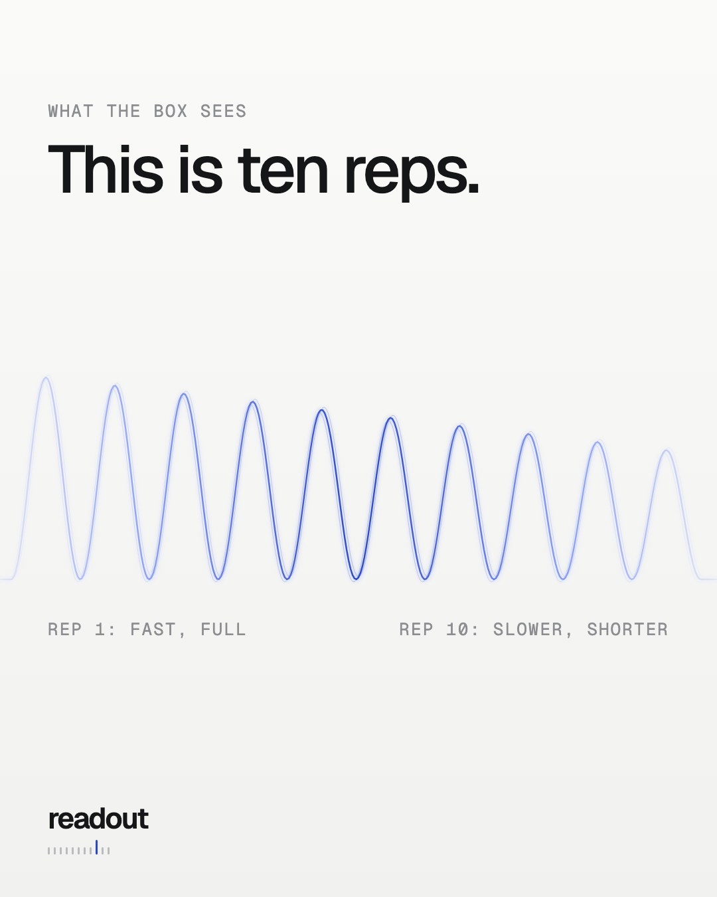
s4 This is ten repsThe wave explained.
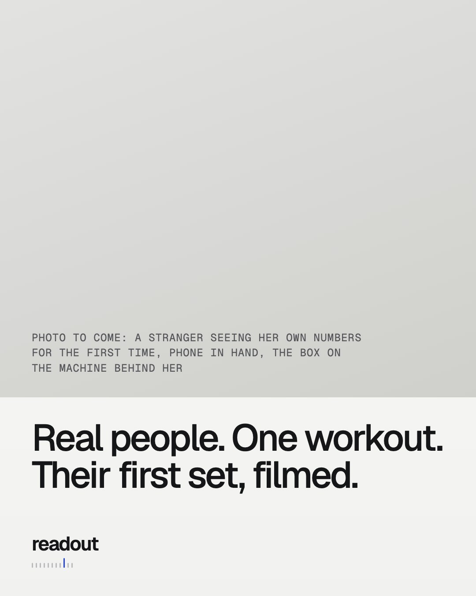
s5 Real peoplePhoto static from the shoot.
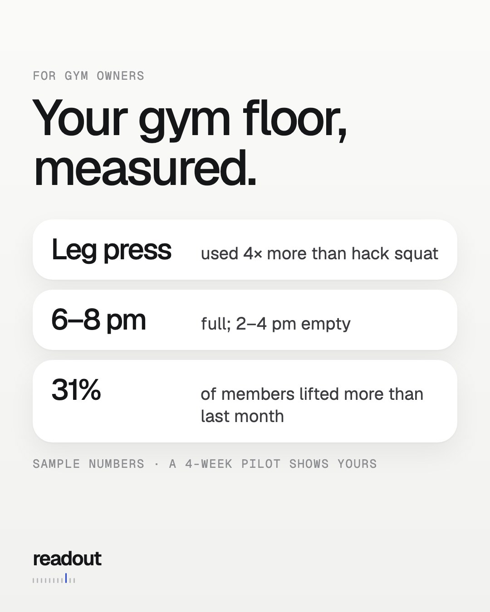
s6 For gym ownersThree numbers from a pilot (sample).
Giveaways
Guess, then measure
Guess your reps, then let the sensor count. Closest wins.
Your first readout
The first [50] on the waitlist train free with the sensor.
Bring a training partner
Tag the person you train with. You both come.
Building in public
Fifteen sensors, one printer
Every sensor we print, misprints too.
What the sensor missed
The 1,000-rep test. Every miss, published.
This week at the lab
One finding, one rule for tomorrow.
The founder’s note
What broke, what is next.
The week
Monday
A First set episode: one person, one workout, the reveal.
Wednesday
One number from the lab, explained.
Friday
Building in public, and the weekly readout e-mail.
Once a month
The giveaway.
Market
Version 2. Branding first, then marketing from it. A conventional, content-led route: hand the sensor to real people for one workout and film what happens. Everyone reacts differently, so it can run as long as people keep coming.
The engine
First set.
A series. One person, one workout at FitPods with the sensor on the machines. Before the set we ask how many they will do; the sensor counts; we show them the number, the wave and their score. Their face when they see it is the episode.
0–5 s
The guess
“How many will you do?” Name, age, how long they have trained, on screen.
5–25 s
The set
The sensor on the machine, the reps on the phone, the wave drawing itself.
25–40 s
The reveal
Guess against count. Their reaction, unscripted.
40–55 s
The read
Score and the one next step, in their words.
end
Next?
“Want to be in an episode?” Link to the waitlist.
Casting
A mix every week: a regular of ten years, a first-month beginner, someone over 55, a coach, a couple, a sceptic. Real FitPods members first, then their friends. Written consent before filming.
Output per episode
One 30–60 s reel (Instagram, TikTok), one five-slide carousel (cover, guess vs count, the wave, the score, next?), one line for the newsletter. Two episodes a week.
The photo shoot
One day at FitPods, 6–8 people, daylight. The sensor on machines up close; hands at the handles; members mid-set; phones showing their numbers; faces at the reveal; the gym empty and full. Feeds statics, carousels, website and the App Store.
The funnelEpisodes on Instagram and TikTok bring people to the profile, then the website’s waitlist. Waitlisters get a free first workout at FitPods with the sensor. Every episode is also proof for gym owners: Adam posts the best ones on LinkedIn with the numbers behind them, and owners get a four-week pilot.
First monthWeek 0: the shoot and four episodes filmed. Weeks 1–4: two episodes and two statics a week, the newsletter every Friday. Month 2: film at a second gym.
WatchViews and shares per episode, saves on carousels, waitlist sign-ups, first workouts booked, owner calls booked.
RulesReal people, real numbers, real reactions; nothing scripted or generated. No one is mocked for a low number; the sensor is the subject, not the person. Sensor accuracy is shown honestly (the 1,000-rep test).
The earlier plan: the open lab
Still useful as the B2B layer under the series.
Market
How Readout gets into gyms. A serious brand doesn’t spread as a joke, so its story has to be true and worth following.
The story
The open lab.
The founder runs a gym. He put sensors on its machines and publishes what they measure, every week, mistakes included. Members get findings they can use. Gym owners see exactly what they would get, from a gym like theirs. Nobody has to believe a pitch; they can watch it happen.
0: late November
Inside
Ten sensors with friends. 1,000 reps counted by hand next to the sensor, the misses written down.
1: December
The lab opens
Ten machines at FitPods, Brno. Waitlist page. The first weekly readout goes out.
2: January–February
In public
Members at FitPods get their scores. Adam posts the lab every week on LinkedIn; the findings go to Instagram.
3: March–April
Three pilot gyms
One more in Brno, two in Zwolle through Windesheim. Owners get their monthly report. The first case study.
4: spring
The report
“90 days on the gym floor”: the first public report, for the press, for owners and for FIBO in Cologne.
Ours
The weekly readout (e-mail): the findings, one useful rule, the misses. The website and its waitlist. The lab page.
Rented
LinkedIn for gym owners, through Adam’s own posts as a gym owner who measured his gym. Instagram for lifters: one finding per post.
Borrowed
A sensor sent to two or three evidence-based lifting creators, no payment, no script. A sports science group at a university checks the accuracy. Gym-industry newsletters and podcasts get the report.
First networkFitPods, Brno: ten machines, the members who already train there. It works when someone reads their first score after a real session and changes something next time.
For gymsA four-week pilot on ten machines, free. Then a price per machine per month (to set). The owner’s monthly report: which machines get used and when, how many members are progressing, who has gone quiet. Members never pay.
The faceAdam, as the gym owner who measured his own gym. The team appears in the lab posts as the people building it.
WatchWeekly readout sign-ups and opens, owner calls booked, pilots signed, the share of members with a score every week.
The riskSlower than a joke: there’s nothing to post until the lab has real numbers, and the accuracy has to be proven first. “Workout tracker” is a crowded shelf; the difference has to be said every time: it records by itself.
E-mails
Five, written in full. Bracketed parts are filled per person or per gym. Sample numbers until the lab has real ones. Nothing is sent without your yes.
You’re on the list. Here’s what we’re measuring.
readout
You’re on the list.
Thanks, [name]. Readout puts a small sensor on each gym machine. It records every rep, set and rest, and after each workout you get one score and one next step.
We’re testing it in our own gym first, FitPods in Brno. Every Friday we send what we found: the weekly readout.
Read week 1
You signed up at readout. One click to leave.
Right after sign-up.
The weekly readout, week 1, 3:24, and why it matters.
readout
Week 1 at the lab
1,284sets
3:24average rest
14%sets at the top of the range
Finding. Rests run long: 3:24 on average against plans of 2:00. On heavy sets that’s fine; on light ones it just makes the workout longer.
One rule. Go up when every set hits the top of your range, twice in a row.
Missed. The sensor missed 4 reps on the chest press when the stack barely moved. We’re fixing the threshold.
See the numbers
All numbers in this mock are samples. One click to leave.
Every Friday, to everyone on the list.
Your first score: 78. Here’s what made it.
readout
78. A good first session.
Progress 85, effort 74, rest 62, consistency 90.
Your rests pulled it down: 3:24 on average against your 2:00. Next time, one thing: leg extension at 50 kg.
Open your workout
One click to leave.
After the first workout with a sensor.
Your November, measured, +10% on the leg press.
readout
Your November
11workouts
+10%leg press
74average score
Best week: the second. Quietest: the last, two workouts. Chest press has stayed at 40 kg for three weeks: try one more set.
See the month
One click to leave.
First of the month, only to people who trained.
What your machines did in November, to the owner of [gym], from Adam
Hi [name],
I run FitPods in Brno. In November we put sensors
on ten of our machines. Here is what they showed
us about our own gym floor:
- the leg press is used 4x more than the hack squat
- 6 to 8 pm is full; 2 to 4 pm is empty
- 31% of members lifted more than in October
I'd like to show you the same report for [gym],
from your own machines: four weeks on ten
machines, free, set up before opening.
15 minutes this week?
Adam
Readout, FitPods, Brno
(sample numbers in this mock)
To owners, after a warm intro or the report. One follow-up at most.
for gym owners and staff
Operators hub
A nice extra for owners: their members and the floor in numbers and pictures.

 the sensor
the sensor
Posts
Version 2, in the app’s look (wave, scale, white cards). The engine is First set: one person, one workout with the sensor, filmed; every episode becomes a reel and a five-slide carousel. Statics come from the lab’s numbers and the photo shoot.
First set, episode 1 carousel





Statics






Giveaways
Guess your reps, then let the sensor count. Closest wins.
The first [50] on the waitlist train free with the sensor.
Tag the person you train with. You both come.
Building in public
Every sensor we print, misprints too.
The 1,000-rep test. Every miss, published.
One finding, one rule for tomorrow.
What broke, what is next.
The week
A First set episode: one person, one workout, the reveal.
One number from the lab, explained.
Building in public, and the weekly readout e-mail.
The giveaway.
Market
Version 2. Branding first, then marketing from it. A conventional, content-led route: hand the sensor to real people for one workout and film what happens. Everyone reacts differently, so it can run as long as people keep coming.
The engine
First set.
A series. One person, one workout at FitPods with the sensor on the machines. Before the set we ask how many they will do; the sensor counts; we show them the number, the wave and their score. Their face when they see it is the episode.
0–5 s
The guess
“How many will you do?” Name, age, how long they have trained, on screen.
5–25 s
The set
The sensor on the machine, the reps on the phone, the wave drawing itself.
25–40 s
The reveal
Guess against count. Their reaction, unscripted.
40–55 s
The read
Score and the one next step, in their words.
end
Next?
“Want to be in an episode?” Link to the waitlist.
Casting
A mix every week: a regular of ten years, a first-month beginner, someone over 55, a coach, a couple, a sceptic. Real FitPods members first, then their friends. Written consent before filming.
Output per episode
One 30–60 s reel (Instagram, TikTok), one five-slide carousel (cover, guess vs count, the wave, the score, next?), one line for the newsletter. Two episodes a week.
The photo shoot
One day at FitPods, 6–8 people, daylight. The sensor on machines up close; hands at the handles; members mid-set; phones showing their numbers; faces at the reveal; the gym empty and full. Feeds statics, carousels, website and the App Store.
The earlier plan: the open lab
Still useful as the B2B layer under the series.
The story
The open lab.
The founder runs a gym. He put sensors on its machines and publishes what they measure, every week, mistakes included. Members get findings they can use. Gym owners see exactly what they would get, from a gym like theirs. Nobody has to believe a pitch; they can watch it happen.
0: late November
Inside
Ten sensors with friends. 1,000 reps counted by hand next to the sensor, the misses written down.
1: December
The lab opens
Ten machines at FitPods, Brno. Waitlist page. The first weekly readout goes out.
2: January–February
In public
Members at FitPods get their scores. Adam posts the lab every week on LinkedIn; the findings go to Instagram.
3: March–April
Three pilot gyms
One more in Brno, two in Zwolle through Windesheim. Owners get their monthly report. The first case study.
4: spring
The report
“90 days on the gym floor”: the first public report, for the press, for owners and for FIBO in Cologne.
Ours
The weekly readout (e-mail): the findings, one useful rule, the misses. The website and its waitlist. The lab page.
Rented
LinkedIn for gym owners, through Adam’s own posts as a gym owner who measured his gym. Instagram for lifters: one finding per post.
Borrowed
A sensor sent to two or three evidence-based lifting creators, no payment, no script. A sports science group at a university checks the accuracy. Gym-industry newsletters and podcasts get the report.